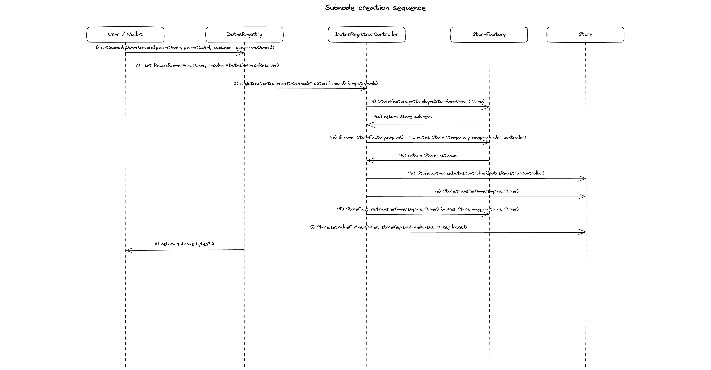
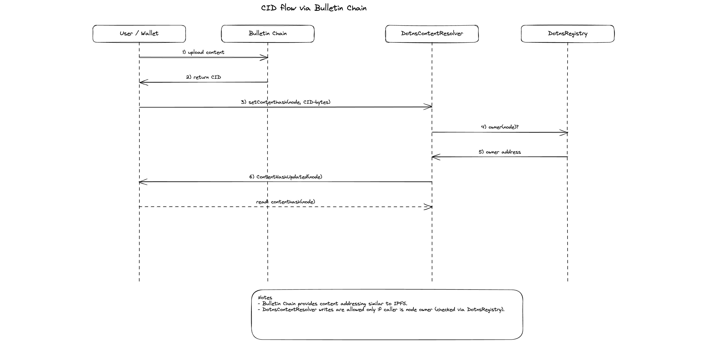

Dotns
Smart contracts for registering .dot names on Polkadot.
DotNS is a naming system for Polkadot. An account can register a .dot name, receive an ERC721 token that represents ownership of that name, attach records to it (addresses, text, content hashes, chat keys), and create subnames beneath it. Two independent issuance paths coexist on the same underlying registrar: a public commit-reveal path for anyone who wants a name, and a Proof-of-Personhood gateway path that issues names to lite-verified and full-verified users. (A lite-verified user is a human at the weaker check; a full-verified user is the same at the stronger check. The two levels are an external Proof-of-Personhood signal the protocol consumes, not something the contracts assign.) Verification level controls what shape of label a user can register: the lite path issues lite labels (labels with trailing digits, for example alice42); the full path issues base names (labels without trailing digits, for example alice). Every piece of state the protocol surfaces is readable through public view functions on the chain itself, so a client needs only a node and a small set of well-known contract addresses to answer any question about the system.
Diagrams
Registration flow

Subnode creation flow

CID flow (Bulletin Chain)

System diagram

Deployment note
To deploy on Paseo, and to run fork tests, you need a local ETH-RPC adapter.
A docker-compose file is provided. It starts the ETH-RPC adapter pointed at the live Paseo Asset Hub endpoint. We route through the adapter rather than the public RPC directly because the adapter is more stable under the traffic pattern a deploy or fork test produces; the public endpoint rate-limits and occasionally stalls, which drops mid-flight transactions and invalidates fork-test state. Anvil is not in the picture here: forge test spins up its own in-process EVM for unit, fuzz, and invariant tests, and fork tests run against the adapter, not against a local Anvil chain.
Start the adapter, then run one of the deployment scripts from package.json:
# fresh deploy, proxied through the adapter to the local Paseo fork
bun run deploy:anvil
# fresh deploy, proxied through the adapter to live Paseo
bun run deploy:testnet
The fresh-deploy pipeline is split across five scripts under scripts/deploy/, each a separate forge script invocation:
DeployCore.s.sol: foundational name-ownership layer (store factory, registrar, reverse resolver, forward registry).DeployRecords.s.sol: per-name record layer (forward resolver, content resolver,PopRules).DeployPolicy.s.sol: commit-reveal controller, name escrow, and protocol registry.DeployPopSystem.s.sol: Proof-of-Personhood resolver and controller.WireDeployments.s.sol: authorisation and registry wire-up plus end-to-end verification. No proxy deploys.
Each stage writes the addresses it produces to a shared JSON manifest at deployments/<network>/<chainid>.json; the next stage reads prior addresses back through the same file. A single monolithic deploy script would accumulate quadratic EVM memory gas across every OpenZeppelin upgrade-safety validation the pipeline runs (the validator shells out to a Node CLI via vm.ffi and parses a multi-megabyte build-info JSON per proxy) and blow past the block gas limit around the eighth proxy. Running each stage as its own forge script process gives each OZ validation a fresh EVM simulation and keeps every check intact. scripts/deploy/run.sh chains the stages; package.json calls into it. Upgrade scripts for individual subsystems live alongside the deploy stages under scripts/deploy/ and share the same shape; the file naming follows scripts/deploy/Upgrade<Subsystem>.s.sol.
Storage-layout safety is non-negotiable on every deploy and upgrade path. The OpenZeppelin validator runs end-to-end on every proxy: on upgrades it diffs the new implementation's storage layout against a pinned Old.sol reference snapshot; on fresh deploys it catches unsafe-upgrade-incompatible patterns (constructors, state-variable assignments, immutables, selfdestruct, raw delegatecall, external library linking, missing initialisers) that would only surface as a bug the first time a future upgrade is attempted. No script in this repository passes unsafeSkipAllChecks or any unsafeAllow override, and adding one is not on the table. If validation fails, fix the contract, not the script. The Old.sol snapshot convention, the PR-scoping rule, and the cleanup checklist for upgrade PRs all live in CONTRIBUTING.md.
Contracts
Two controllers sit on top of a single registrar and a single protocol registry. The registrar holds the ERC721 token per name; the registry holds the forward node => (owner, resolver) mapping and subname hierarchy; the resolvers hold per-name records; the protocol registry is the indirection layer through which every contract resolves its siblings at runtime. Controllers are the entry points: they mint names and drive the side effects. Neither controller imports the other. The layers underneath arbitrate collision handling: ERC721 uniqueness on the registrar, and a single reservation table on PopRules that both flows read through.
DotnsRegistrarController
Commit-reveal controller for the public registration path. A caller first submits a commitment hash, waits out the minimum commitment age, then reveals the registration parameters alongside the payment. The controller validates the commitment, routes price and eligibility through PopRules, and orchestrates every side effect of a successful registration: the mint on the registrar, the forward wire-up on the registry, the reverse record on the reverse resolver, the immutable Store write, and any refund owed on overpayment. Acceptable input is a single DNS label; governance-reserved labels are rejected at the pricing layer.
DotnsPopController
Dedicated controller for the Proof-of-Personhood gateway flow. Lives behind its own UUPS proxy with its own storage and is registered on the registrar via addController alongside the commit-reveal controller. Two entry points, both restricted to calls where revive's System precompile reports callerIsRoot().
The first, reserveBaseName, mints a lite label to a lite-verified user. Lite labels are DNS labels with at least two trailing digits (for example alice42); the gateway strips any separator the pallet uses before calling so that the on-chain label is flat. The call also persists the user's chat key on the PoP resolver and optionally enqueues a reservation for a base name the user intends to claim later.
The second, registerBaseName, mints a base name to a full-verified user. Whether the call is a claim against a prior lite reservation or a fresh standalone registration is derived from on-chain reservation state; the caller does not choose. The link argument selects the chat-key source: inherit from a prior lite label, or accept a fresh one in the payload. When inheriting, the call also writes the liteLink (full => lite) and fullClaim (lite => full) records on the PoP resolver in the same transaction so downstream consumers can resolve either direction without scanning events.
Each base label carries a head/tail-indexed reservation queue with a capacity of MAX_RESERVATION_QUEUE and a governance-configurable reservationDuration. The queue head is mirrored into PopRules on every head transition (enqueue-from-empty, expiry-driven promotion, non-expiry head removal, claim-wipes-queue), so the public commit-reveal flow sees the same cross-flow lock through its existing PopRules price check. Expiry advancement is permissionless: anyone can call expireReservation to garbage-collect a stale head, which is what the pallet does on its own cadence.
DotnsRegistrar
ERC721-backed registrar that mints ownership of label IDs (labelhashes). Minting is restricted to every address in the controllers mapping; the mapping is owner-gated through addController and removeController. Every other contract in the system that needs to check "is this address authorised to drive name state?" consults this mapping rather than keeping a parallel list, which is what lets multiple controllers coexist on the same registrar without per-contract configuration changes.
DotnsRegistry
Forward registry mapping node to (owner, resolver) and supporting subnode creation. When a base name is minted on the registrar, the matching controller wires the node to the new owner through this registry. Privileged node wiring defers to the same controllers mapping on the registrar, so both controllers can write without the registry tracking controllers of its own.
Subnames are created by the base-name owner. A subname carries its own (owner, resolver) and can in turn carry subnames, so the registry is the place the name hierarchy actually lives.
PopRules
PoP-aware name classification and pricing. Classifies a label into one of four tiers: NoStatus (long labels with trailing digits, open to anyone), PopLite (short labels with trailing digits, requires lite-person verification), PopFull (labels without trailing digits, requires full-person verification), and Reserved (short labels governed by the protocol). The classification determines the price and the eligibility gate the commit-reveal controller enforces.
PopRules also holds the cross-flow reservation table for base names. Two write paths share one mapping keyed by the bare stem. The first, reserveBaseName on PopRules (distinct from the same-named entrypoint on DotnsPopController above, which mints a lite label and only incidentally writes here), is called by the commit-reveal controller during a lite registration: it classifies the incoming label, strips the trailing digits, and writes the bare stem. The second, reserveBaseNameForPop, is called by the PoP controller on every reservation-queue head transition: it takes a bare stem directly and reverts when the slot is held by a different user, so the caller's local queue bookkeeping never silently diverges from the PopRules state.
Two read paths, priceWithCheck and priceWithoutCheck, are what the public flow consults. Both strip trailing digits before looking up the reservation, so any live entry on a bare stem blocks registrations of any variant under that stem for the reservation window (12 weeks by default).
DotnsReverseResolver
Reverse records mapping an address to its primary name. When a name is registered, the commit-reveal controller calls the reverse resolver to set the registrant's primary name. Writes are restricted to the addresses registered under CONTROLLER and REGISTRAR on the protocol registry (the commit-reveal controller and the registrar itself); rotating either is a single protocolRegistry.set call. Reads are open.
DotnsContentResolver
Stores contenthash and text records per node. This is where external content links (for example IPFS hashes) and arbitrary key-value text records (for example social handles, verification metadata) live. Writes require node ownership or an approved operator; reads are open.
DotnsResolver
Stores forward-resolution address records per node. This is the conventional "name to address" lookup: a client has a .dot name and wants to know the Ethereum address behind it. Writes require node ownership; reads are open.
DotnsPopResolver
Per-node resolver for records produced by the Proof-of-Personhood flow. Three record kinds. The chat key is ECDH public-key bytes keyed by node; it is written by the PoP controller during a lite reservation and during any claim path that inherits from a prior lite entry, and is what gives verified users an on-chain discovery channel for end-to-end encrypted messaging. The lite link answers "which lite label did this base name claim from?" and is keyed by the base-name node. The full claim is the reverse direction: it answers "which base name did this lite label claim?" and is keyed by the lite labelhash. The forward and reverse links are written by the same call, so they stay in lockstep; downstream consumers that look up by lite label (Nova's pallet, for one) resolve the base name without scanning events.
Writer authorisation is dynamic: the PoP controller address is fetched from the protocol registry on every write. Rotating the PoP controller is a single set call on the protocol registry with no resolver upgrade required.
DotnsProtocolRegistry
On-chain lookup table mapping well-known bytes32 keys (declared in DotnsConstants) to contract addresses. Every DotNS contract resolves its siblings through this registry at runtime.
Without it, each contract would store direct addresses to every contract it calls. An upgrade that changes one address would require calling updateX() on every contract that references it. With N contracts and M cross-references, that is M separate owner transactions per address change. The protocol registry reduces this to one: update the key in the registry, and every caller picks up the new address on its next call. The indirection also means a governance-driven rotation of, say, the PoP controller does not break any consumer that has already been deployed.
The registered keys include REGISTRAR, CONTROLLER, REGISTRY, REVERSE_RESOLVER, RESOLVER, CONTENT_RESOLVER, POP_RULES, STORE_FACTORY, NAME_ESCROW, POP_CONTROLLER, and POP_RESOLVER.
DotnsNameEscrow
Escrow for refundable deposits, transfer-fee accounting, and released-name custody. A direct registration creates a refundable release position with the owner locked as the refund recipient; a cross-tier top-up at registration, a transfer-time difference paid by an upward move, and any overpayment that the payer chooses to leave on the contract all credit a single insurance fund. The escrow also tracks, per name, the highest tier price ever paid against it; the registrar consults this funded tier on every transfer to compute the difference a higher-tier recipient must attach. Name owners can release an eligible token into escrow, claim their pending withdrawal after cooldown, and later the controller can reclaim released-and-claimed names during a new registration. The full breakdown of which payments are refundable and which credit insurance is in Fees on registration and transfer.
Fees on registration and transfer
Every priced action in DotNS sends value to one of two destinations on the escrow. The first is refundable: the value is held against a release position attached to the name, and is returned in full to the locked recipient when the position is released and the cooldown elapses. The second is insurance: the value lands in a single fund the escrow keeps and stays there, drawable on by other names whose refundable reserves come up short on a withdrawal. Which destination the value goes to is decided by two questions: whether the sender is paying their own tier price or someone else's, and whether the recipient of a transfer was already covered by an earlier payment against this same name.
What Proof-of-Personhood unlocks
Verification is the upgrade ladder the protocol is built around. A PopLite account registers names for free, receives names for free from any sender, and is visibly cheaper to interact with than an unverified peer. A PopFull account inherits all of that and gains the base-name surface (labels with no trailing digits), which no lower tier can register at any price. The four tiers are the concrete affordances Proof-of-Personhood buys an account; the fees on the unverified side are what make those affordances real rather than nominal.
The four tiers carve up what each level of verification entitles an account to:
NoStatus: open access for any account that has not been verified. An unverified user can register a long label with trailing digits, hold the.dotname, attach records to it, and create subnames; everything an account does in this tier still works, it just runs over a fee gradient. Registration costs the length-scaledNoStatusrate, base names (no trailing digits) are out of reach at any price, and incoming transfers from verified senders attach a fee that the sender has to cover.PopLite: free registration of short trailing-digit labels, plus free inbound transfers from any tier. A lite-verified account is no longer expensive to send to; senders attach nothing for an inbound move regardless of how the name was originally funded.PopFull: everythingPopLiteunlocks, plus the base-name surface (labels with no trailing digits). Full personhood is the scarcest signal in the protocol and the tier that gates the most contested namespace; the registration is free and inbound transfers stay free.Reserved: governance's hold on short or strategic labels, releasable only through the whitelistedregisterReservedentrypoint. Outside the upgrade ladder by design.
The asymmetry that turns these registration tiers into a ladder rather than a static set of categories is on the transfer side, and it is read from the recipient. A NoStatus recipient is the only recipient a sender ever has to pay to send a name to: incoming transfers of any name funded at zero (every name a verified user originally registered) attach the NoStatus rate, charged to whoever pays for the transaction. A PopLite or PopFull recipient is free to send to from anywhere, regardless of how the name was funded, because the recipient's tier price is zero and slides under the name's funded tier on every comparison. The mechanism is straightforward: a name's funded tier is fixed at whatever the registrant actually paid (a NoStatus registration pins it to the NoStatus rate; a verified registration leaves it at zero), and the required fee on a transfer is the difference between the recipient's tier price and the funded tier, floored at zero. The arithmetic falls out the same way every time.
So becoming PopLite means a sender never has to attach a fee to put a name in your wallet, whatever the name's history. Becoming PopFull means the same, plus access to a namespace no lower tier can reach. Staying NoStatus means every inbound transfer of a verified-origin name carries a fee a sender has to cover, and the bulk-grab path stays priced at the length-scaled deterrent. The path from NoStatus through PopLite to PopFull is the path from "names cost to land in my wallet" to "names flow into my wallet for free, and the contested namespace opens up."
The fee mechanics in the rest of this section are the consequence of this rationing. The refundable deposit returns the unverified user's registration payment after the cooldown so the fee is a deterrent, not a permanent levy. The insurance fund absorbs cross-tier sponsorship: when a verified sender pays for an unverified owner's registration, the value cannot be refunded to the owner (the owner did not pay) and cannot be refunded to the sender (the sender chose to gift it), so it credits a shared fund the protocol draws on to cover refund shortfalls elsewhere.
Definitions
Six terms appear throughout this section and are worth pinning down before the tables.
-
NoStatusrate. The length-scaled fee an unverified account pays. PopRules (see contracts above) computes it from the label length only: labels of 15 characters and above pay half the configured starting price; everything shorter than 15 paysstartingPrice × (15 − length). Verified accounts (PopLiteorPopFull) always pay zero. -
Funded tier. Per name, the largest amount ever paid through escrow for the token. Stored as
runningMaxon the escrow (see DotnsNameEscrow above), bumped by every payment path (refundable deposit, registration friction, transfer-time delta, transfer-time reach floor) and never decreases. Once a tier has been funded, every later recipient priced at or below it inherits the coverage automatically. -
Covered. A recipient is covered when their tier price is at or below the funded tier of the name. A covered recipient owes nothing.
-
Required fee. The amount a transfer must attach. The escrow takes
max(priceForTo − runningMax, reachFloor)and floors negative values at zero, so a covered recipient with reach owes nothing, an uncovered recipient owes the price-delta path, and a covered-but-below-reach recipient owes the reach floor. -
Reach floor. The friction a transfer to a recipient who cannot meet the label's required tier must attach. Equals the
NoStatusrate (length-scaled) when the recipient's verification level is below the label's tier; zero otherwise. Mirrors the personhood gate enforced on direct registration, but priced rather than reverted. -
Personhood gate. A pre-pricing check on direct registration: the registering owner must hold the verification level the label classifies under. A
NoStatusowner cannot direct-register aPopLiteorPopFulllabel; aPopLiteowner cannot direct-register aPopFulllabel or a base name (a label with no trailing digits). The cross-payer path skips this gate, which is what makes some of the rows in the registration matrix below reachable at all. -
Skip both. Shorthand for "the controller does not call the escrow at all": no refundable deposit is created, and the insurance fund is not credited. This is the outcome whenever the owner's price comes back zero.
Registration matrix
PopRules (see contracts above) quotes the price for a registration based on the paying account's verification status, not on the label's tier classification. An account with NoStatus pays the NoStatus rate (the spam deterrent above); an account verified as PopLite or PopFull pays zero. The label classification is a separate, parallel dimension: it gates eligibility through the personhood gate above, but does not by itself set the price.
The matrix has four distinct outcomes, and which one fires depends on three independent inputs: sender status, owner status, and the label's tier classification.
- Skip both. The controller never calls the escrow. Owner price is zero (verified owner) and sender's reach already meets the label's tier, so nothing crosses any boundary the protocol charges for.
- Refundable deposit. Owner price is non-zero (owner is
NoStatus) and the sender's tier price matches the owner's by construction. The deposit is locked to the owner, who can claim it back through the release-and-cooldown path. - Insurance fund (cross-tier sponsorship). Owner price is non-zero, but the sender's tier price differs (the sender is verified, paying for an unverified owner). There is no refundable destination available without creating a refund position the owner did not earn; the value credits insurance instead.
- Insurance fund (reach friction). Owner price is zero (verified owner), but the sender's verification level is below the label's required tier and the cross-payer path skipped the personhood gate. The friction equals the length-scaled
NoStatusrate and credits insurance.
The matrix itself is a 3×3 across sender status and owner status, with the three diagonals (NoStatus/NoStatus, PopLite/PopLite, PopFull/PopFull) split into "self" and "other addr" sub-rows so the direct path (sender == owner) and cross-payer path (sender != owner) are both visible. That gives 12 rows. The "Routing" column shows the outcome that fires when the sender's reach meets the label's tier (the default case); cells where the cross-payer reach friction can shift the outcome are flagged inline.
| Sender status | Owner status | Owner's price | Sender's price | Routing |
|---|---|---|---|---|
NoStatus | self (NoStatus) | NoStatus rate | NoStatus rate | Refundable deposit; refund recipient is the owner (and the same wallet as the sender); funded tier initialised |
NoStatus | NoStatus (other addr) | NoStatus rate | NoStatus rate | Refundable deposit (prices match); refund recipient is the owner; funded tier initialised |
NoStatus | PopLite | 0 | NoStatus rate | Skip both for NoStatus-tier labels; Insurance fund (reach friction) for PopLite- or PopFull-tier labels |
NoStatus | PopFull | 0 | NoStatus rate | Skip both for NoStatus-tier labels; Insurance fund (reach friction) for PopLite- or PopFull-tier labels |
PopLite | NoStatus | NoStatus rate | 0 | Insurance fund (prices differ); no refundable position is created; the owner is named in the registration event for observability but has no claim against the fund |
PopLite | self (PopLite) | 0 | 0 | Skip both |
PopLite | PopLite (other addr) | 0 | 0 | Skip both for NoStatus- or PopLite-tier labels; Insurance fund (reach friction) for PopFull-tier labels |
PopLite | PopFull | 0 | 0 | Skip both for NoStatus- or PopLite-tier labels; Insurance fund (reach friction) for PopFull-tier labels |
PopFull | NoStatus | NoStatus rate | 0 | Insurance fund (prices differ); no refundable position is created; the owner is named in the registration event for observability but has no claim against the fund |
PopFull | PopLite | 0 | 0 | Skip both |
PopFull | self (PopFull) | 0 | 0 | Skip both |
PopFull | PopFull (other addr) | 0 | 0 | Skip both |
Three rules sit above the matrix and decide whether the call ever reaches a row at all.
-
Personhood gate (direct path only). When the sender is also the owner, the personhood gate fires before the matrix row applies. A
NoStatusowner cannot direct-register a label that classifies asPopLiteorPopFull; aPopLiteowner cannot direct-register aPopFulllabel or a base name with no trailing digits. The call reverts before any price is computed. The cross-payer path skips this gate, which is why the matrix above can show aNoStatussender registering a name to aPopLiteorPopFullowner. -
Reserved labels. Any label whose classification resolves to
Reserved(either by governance designation, or by an active base-name reservation held by a different user) reverts. The privileged whitelisted-onlyregisterReservedpath is the single exception: it admits a reserved name free of charge and creates no escrow position. -
Overpayment. Any value attached above the quoted price is refunded to the sender on the same transaction, regardless of which matrix row the registration lands in.
Transfer matrix: non-fee paths
A handful of move types skip the fee path entirely. They appear here for completeness; none of them charges or refunds anything beyond what the move itself implies.
| Move type | Outcome |
|---|---|
| Mint (no prior owner) | The controller has already priced this at registration time; no transfer-time fee |
| Burn (no new owner) | Defensive; never triggered by a user-facing path |
| Self-transfer (the same wallet on both sides) | No economic event; passes through unchanged |
| Move into the escrow (release path) | Custody event for a release; the escrow is the counterparty, not a recipient |
| Move out of the escrow (reclaim or owner action) | Custody event for a reclaim; the escrow is releasing custody, not receiving value |
Transfer matrix: standard moves
A standard move is any transfer from one user wallet to a different user wallet that is not one of the rows above. The escrow computes the required fee as max(priceForTo − funded tier, reachFloor) floored at zero. The first term charges a delta when the recipient's tier price exceeds the name's funded tier; the second term charges friction when the recipient cannot meet the label's required tier even though the price-delta path would be zero. The table below enumerates every reachable combination of (recipient tier vs funded tier), (recipient's reach vs label tier), and (attached value).
| Recipient priced relative to the funded tier | Recipient's reach vs label tier | Attached value | Outcome |
|---|---|---|---|
| At or below the funded tier (covered) | At or above (no reach gate) | Zero | Free transfer; ownership flips to the recipient |
| At or below the funded tier (covered) | At or above (no reach gate) | Above zero | The full attached value is refunded to the sender; ownership flips |
| At or below the funded tier (covered) | Below (verified-but-below) | Zero | Reverts at the registrar; the reach floor is owed and nothing is attached |
| At or below the funded tier (covered) | Below (verified-but-below) | Less than the reach floor | Reverts at the escrow; partial fees are not accepted |
| At or below the funded tier (covered) | Below (verified-but-below) | Equal to the reach floor | The reach floor credits insurance; the funded tier bumps to the floor amount; ownership flips |
| At or below the funded tier (covered) | Below (verified-but-below) | Above the reach floor | Reach floor credits insurance; funded tier bumps; the excess attached value is refunded to the sender; ownership flips |
| Above the funded tier (uncovered) | Either | Zero | Reverts at the registrar; a fee-bearing transfer with nothing attached is rejected before any state changes |
| Above the funded tier (uncovered) | Either | Less than the required fee | Reverts at the escrow; partial fees are not accepted, so the entire move is rolled back |
| Above the funded tier (uncovered) | Either | Equal to the required fee | The required fee credits the insurance fund; the funded tier is bumped to max(priceForTo, reachFloor); ownership flips |
| Above the funded tier (uncovered) | Either | Above the required fee | The required fee credits insurance; the funded tier is bumped; the excess attached value is refunded to the sender; ownership flips |
The recipient-tier-only quote and reach-floor lookup are what let a single transfer call serve every legitimate move. A wallet handing a name from one full-person to another full-person attaches nothing and the registrar lets the call through; the same call with an attached amount and a higher-tier recipient routes the difference to insurance, bumps the funded tier, and forwards any excess back to the sender. The registrar exposes a public read-only quote that returns the exact amount a UI should attach, so a transfer never needs a separate fee-approval step or a probing call.
Design note: why the funded tier is per-name
Tier eligibility is per-account on PopRules; the deposit that funded a tier is per-name on the escrow. The split is deliberate. If the funded tier were tracked by account, transferring a name out of a full-person holder's wallet would silently drop the coverage and the next move would re-charge the recipient as if the tier had never been paid. By tracking it per name, coverage rides with the name itself: a name minted at the full-person price stays priced at the full-person tier no matter how many wallets it passes through, and a recipient inheriting from a higher-tier predecessor pays nothing because the tier above already paid. The insurance fund absorbs the differences paid along the way and remains available to cover refund shortfalls on any other name whose refundable reserves come up short.
StoreFactory and Store
Per-user storage used to persist DotNS-written immutable records. Each account that has ever received a DotNS name gets a dedicated Store on first write; the factory deploys and tracks it. A Store entry, once written, is locked and cannot be overwritten, which is what gives registration records the durability callers expect. The Store invariant is labels only: registration records go here; every other per-name category (reverse, content, forward address, chat key, lite link) goes to a dedicated resolver.
Deployments
Paseo Asset Hub (chainId 420420417):
| Contract | Address |
|---|---|
| DotnsProtocolRegistry | 0xF8531342444fAC0A75719130eECcf45314584EFe |
| StoreFactory | 0x030296782F4d3046B080BcB017f01837561D9702 |
| DotnsRegistrar | 0x329aAA5b6bEa94E750b2dacBa74Bf41291E6c2BD |
| DotnsReverseResolver | 0x95D57363B491CF743970c640fe419541386ac8BF |
| DotnsRegistry | 0x4Da0d37aBe96C06ab19963F31ca2DC0412057a6f |
| DotnsContentResolver | 0x7756DF72CBc7f062e7403cD59e45fBc78bed1cD7 |
| DotnsResolver | 0x95645C7fD0fF38790647FE13F87Eb11c1DCc8514 |
| PopRules | 0x4e8920B1E69d0cEA9b23CBFC87A17Ee6fE02d2d3 |
| DotnsRegistrarController | 0xd09e0F1c1E6CE8Cf40df929ef4FC778629573651 |
| DotnsNameEscrow | 0xA73e39D6D4eDbF6db9b3880228f935279f8cC16f |
| DotnsPopController | 0x33575240105e9E5fD623516A1a6bA8A8Ba6937BB |
| DotnsPopResolver | 0x86B83CA91f8BC2293E304EA7e026C0914c68C793 |
Mental model for new features
Treat the chain as the database. Assume no servers and no indexers. If a feature needs an offchain service to be usable, it is not a DotNS feature.
This has a practical implication: every feature must come with an explicit query path. A client should be able to start from a small set of known contracts and find everything it needs with a bounded number of calls. Every getter is external view; controllers and resolvers check authorisation on writes, never on reads; governance key rotation does not break existing read paths because consumers re-resolve their siblings through the protocol registry on every call.
Rules of thumb:
- State is the source of truth. Events are for observability.
- Discovery must be deterministic. If something is created, store where to find it.
- Avoid "scan and reconstruct". Do not require replaying logs from genesis to recover user state.
- Prefer simple keys.
node,labelhash,owner,commitmentshould be enough to locate related data. - If you need lists, make them enumerable onchain with pagination. Do not assume an indexer will build the list.
- If a rule matters for funds or correctness, enforce it onchain. Offchain checks are optional UX.
- If a new record belongs to a single name, it goes on a dedicated resolver, not on the Store. The Store stays labels only.
- A new cross-contract handshake must be expressible as a bounded sequence of view calls, and every step must be tested at the level where it lives: unit for a single-contract behaviour, fuzz for property coverage over random inputs, invariant for properties that must hold across random call sequences, and fork for live-state behaviour.
A quick checklist for a PR adding a feature:
- Where is the canonical state stored?
- From which known contract can a client discover it?
- What are the exact view functions needed to read it without scanning?
- How does a client list relevant items (if listing is required), and how is it paginated?
When to add a new controller
A controller is the policy layer that mints names and orchestrates the side effects of a registration. Add one when the issuance policy genuinely differs from every existing controller. Different authorisation (a gateway origin rather than a commit-reveal commitment), a different pricing or eligibility rule, a different set of records to write, or a different cross-contract coordination requirement all count. Do not add one when the difference is a flag on an existing flow; a flag means the existing controller grows a second reason to change, which is what the split is meant to prevent.
A new controller lives behind its own UUPS proxy with its own storage, and is registered on the registrar through addController. It must not import any other controller. Cross-flow collisions between controllers are arbitrated at the layers beneath them: ERC721 uniqueness on the registrar, and shared authority contracts like PopRules that both flows read through. Extending this means the new controller needs to think about which cross-flow authorities it writes to and how it keeps its local state in lockstep with them (the PoP controller's reservation queue mirrors its head into PopRules on every head transition for exactly this reason).
When to add a new resolver
A resolver is the storage layer for per-name records. Add one when a new record category exists that is semantically unrelated to what existing resolvers hold and that has its own authorisation model. An ECDH chat key is a different category from a contenthash, which is a different category from a forward address record; each lives on its own resolver because each has its own writer policy and its own read consumers.
Do not add a resolver for a record that already fits one of the existing categories; extend the existing resolver instead. And do not put user records on the Store: the Store is labels only, by invariant, and every other per-name category goes to a dedicated resolver. A resolver must not hold registration records, and the Store must not hold anything but registration records. Keeping that boundary sharp is what makes the system legible.
Every resolver must spell out its writer policy on its interface and its read surface. Writes are gated; reads are always open. Two gate patterns exist in the system today and picking the right one matters. When the record is owned by the end user (forward address records, content hashes, text records), gate on node ownership: the resolver calls back into DotnsRegistry.owner(node) on every write, so transferring the name transfers write permission automatically with no resolver upgrade. When the record is owned by a protocol-level writer (reverse records, PoP-flow records), gate on the writer address fetched from the protocol registry on every call: the resolver reads something like POP_CONTROLLER or CONTROLLER off the registry per write, so rotating the writer is a single protocolRegistry.set call with no resolver upgrade. Do not store the writer address on the resolver itself.
When to extend something existing instead
Most features fit an existing contract and extending it is the right move. A new text record goes on the content resolver. A new view function on an existing registry adds to that registry. A new validation rule on registration modifies the commit-reveal controller. Adding a new controller or resolver solves a different problem: a responsibility that does not yet have a home. If you cannot cite the new responsibility in a sentence, you are extending, not adding.
Example query paths. Each row starts from a small set of known contracts; every hop is a public view call, so any node can resolve the path without special access.
| Lookup | Path |
|---|---|
| Lite labelhash => full-person node | Protocol registry => PoP resolver => fullClaim(liteLabelhash) |
| Full-person node => lite labelhash | Protocol registry => PoP resolver => liteLink(fullNode) |
| Node => chat key | Protocol registry => PoP resolver => chatKey(node) |
| Node or tokenId => registered label | Protocol registry => registrar => labelOf(uint256(node)) |
| Base stem => gateway-reservation state | Protocol registry => PoP controller => isReservedForClaim(baseLabel) |
| Base stem => cross-flow reservation state | Protocol registry => PopRules => isBaseNameReserved(baseLabel) |
| Node => ERC721 owner | Protocol registry => registrar => ownerOf(uint256(node)) |
| Subnode => forward-registry owner | Protocol registry => registry => owner(subnode) |
| Node => forward address record | Protocol registry => forward resolver => address record |
| Address => primary name | Protocol registry => reverse resolver => primary name |
Build
forge build
Test
forge clean
forge test
Fork tests are upgrade-PR scoped: between upgrade PRs the test/fork/ directory is empty and there is nothing to skip. While an upgrade PR is in flight, skip the fork test with forge test --no-match-path 'test/fork/**'. The full upgrade-PR workflow (Old.sol snapshots, fork-test pairing, and the cleanup checklist) is in CONTRIBUTING.md.